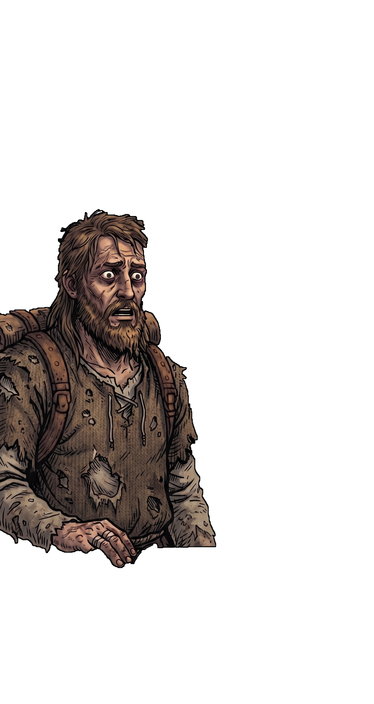
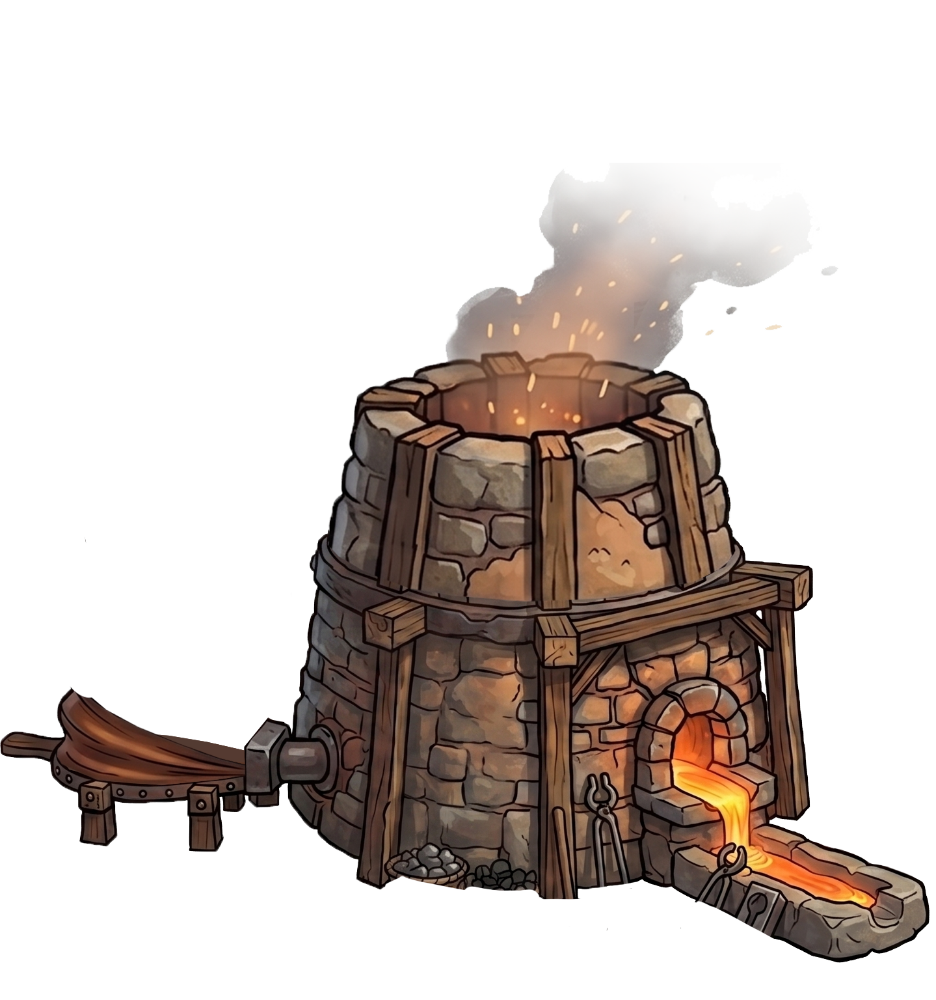
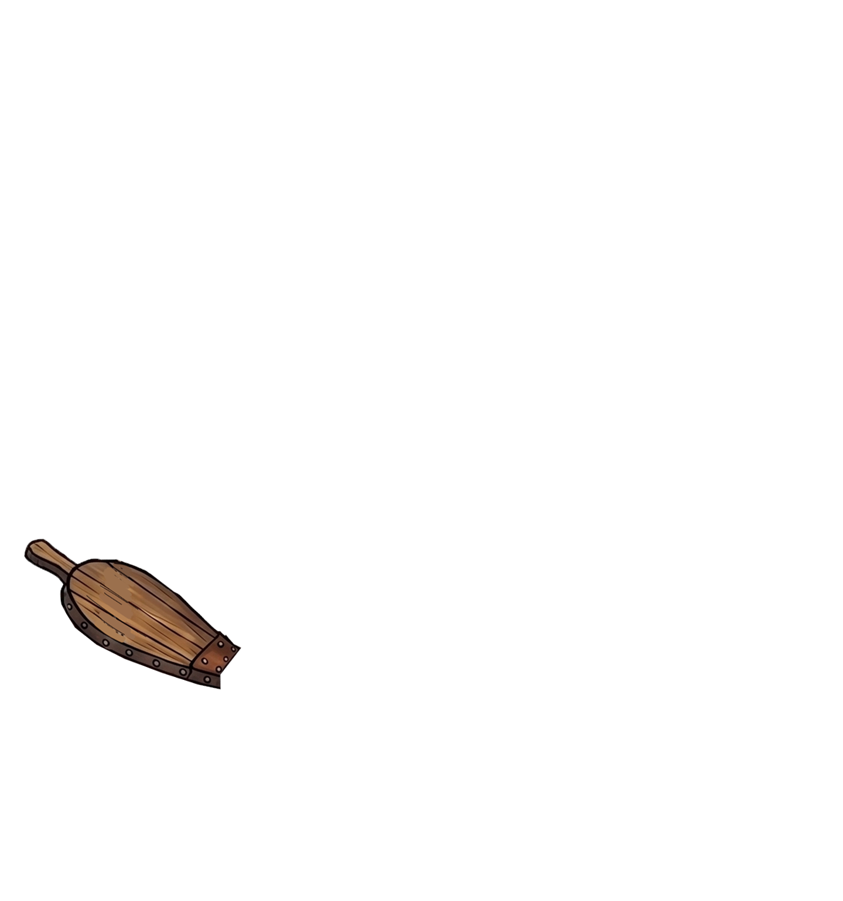
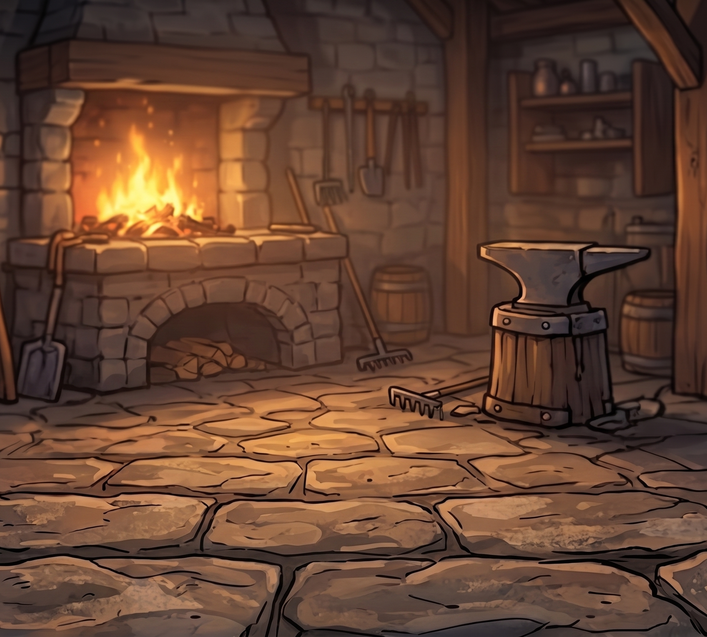
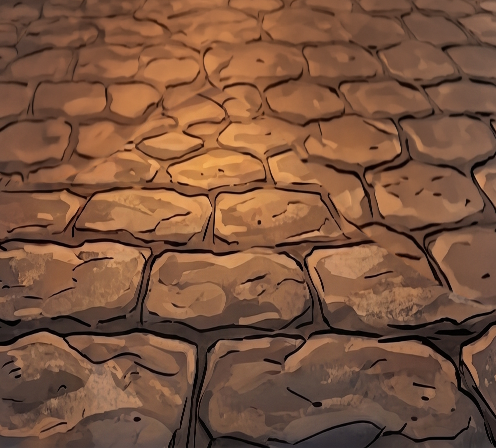
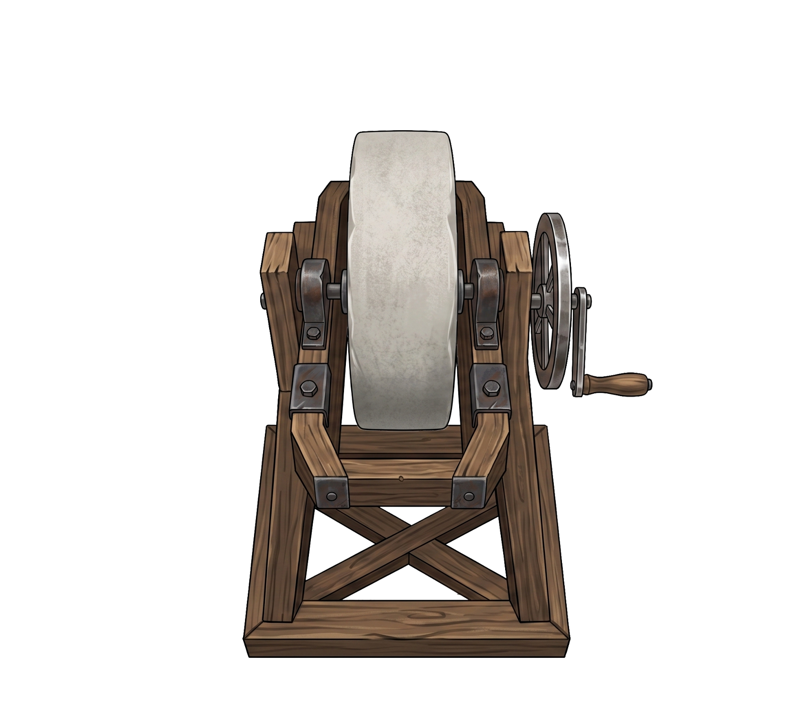
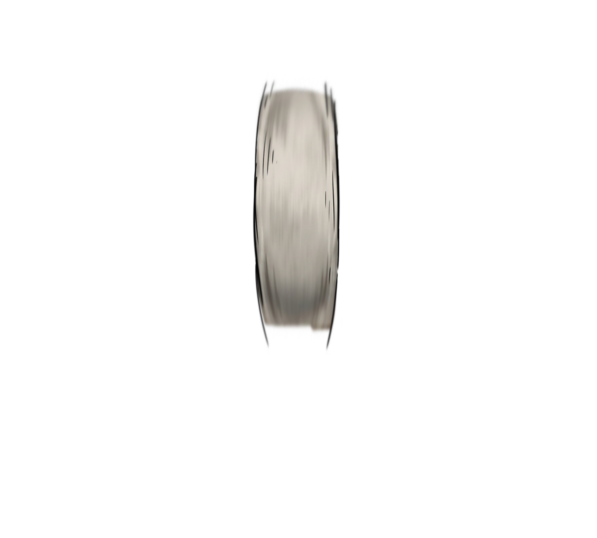

Shop Front🏪
Passively sells your swords over time.
The shop is currently closed.

PURITYEPIC
Day 1
0 | 0
×I×II×III
0° ×1

Choose an ore — its shape is the route
Pick an ore to plot a route.


Hold the blade at working heat
Tap Pulley to Lower Bucket
Design Desk
The look of the sword does not affect its properties... Design freely!
Hammer the Blade
Strike the glowing marks before they fade!
Quench the Blade

Tap the blade to quench it
Sharpen the Blade



✨ You've reached a trait
See the trait mark ❓… add some iron to go down to it.